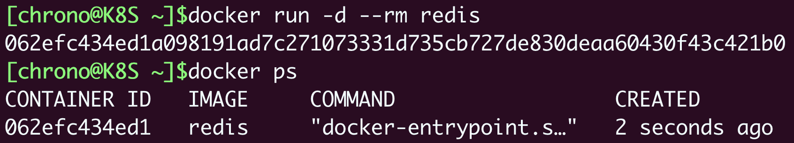
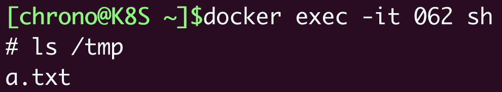
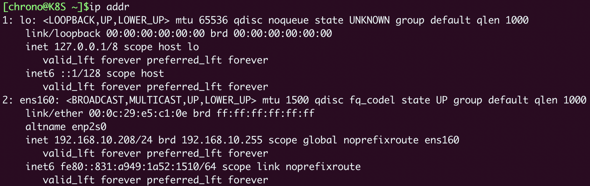
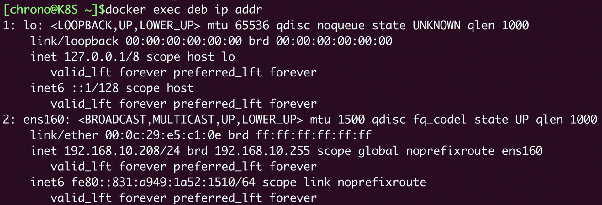
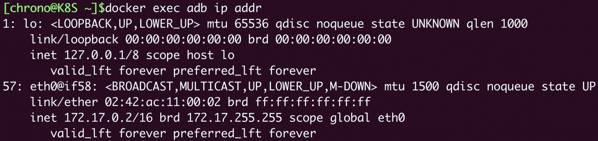
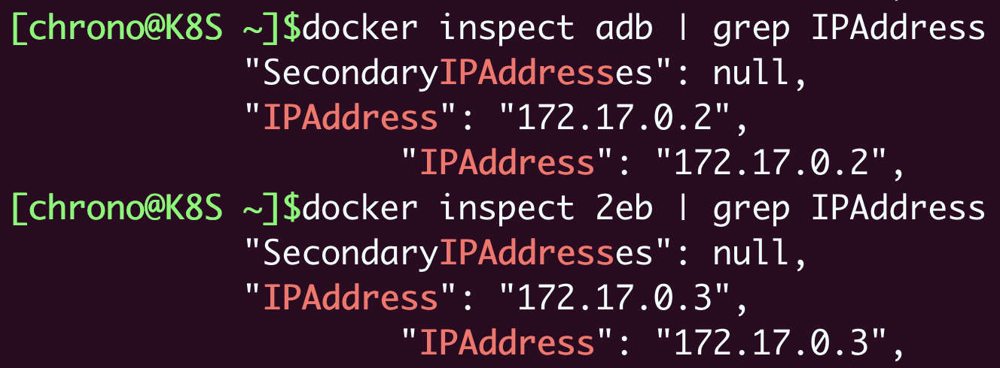
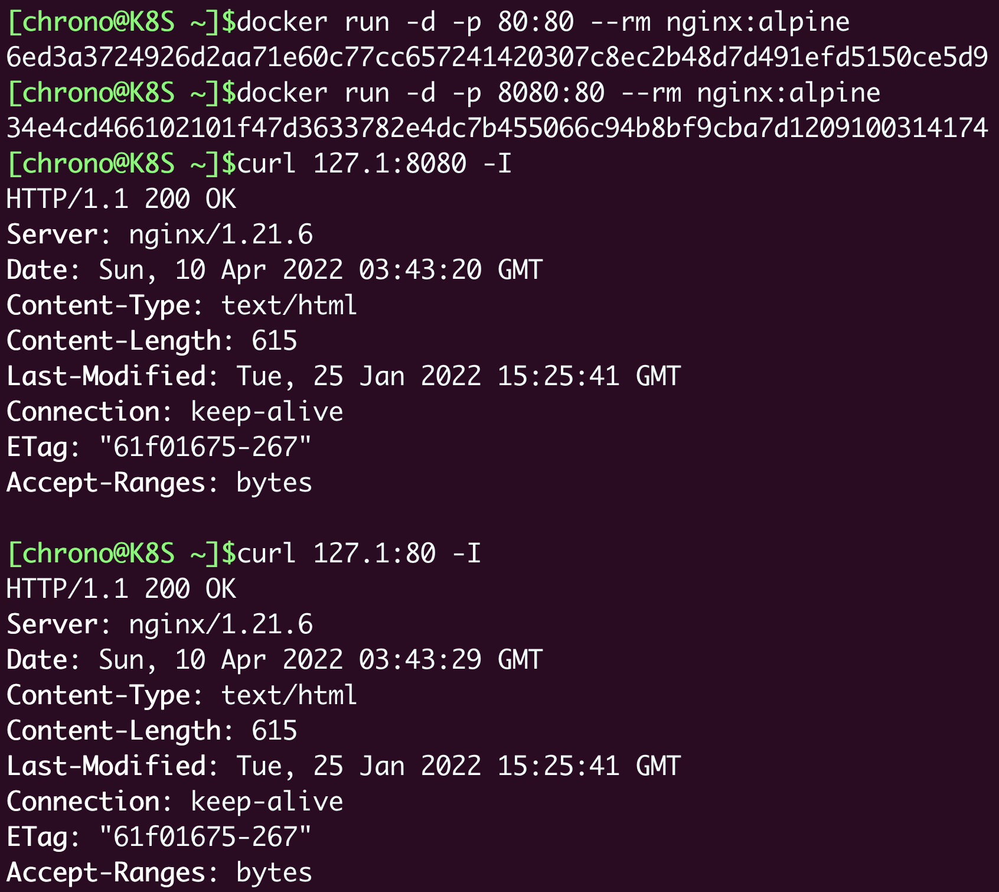
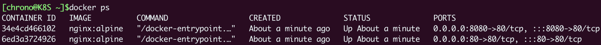
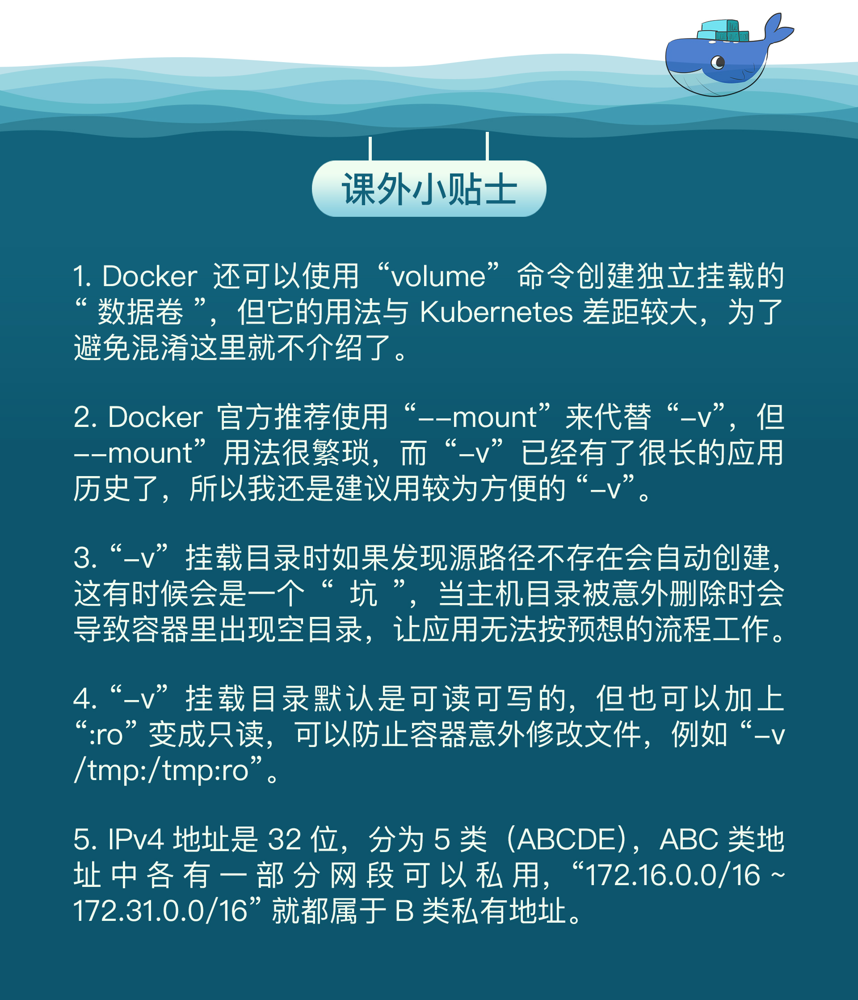

- 00 开篇词 迎难而上，做云原生时代的弄潮儿.md.html
- 00 课前准备 动手实践才是最好的学习方式.md.html
- 01 初识容器：万事开头难.md.html
- 02 被隔离的进程：一起来看看容器的本质.md.html
- 03 容器化的应用：会了这些你就是Docker高手.md.html
- 04 创建容器镜像：如何编写正确、高效的Dockerfile.md.html
- 05 镜像仓库：该怎样用好Docker Hub这个宝藏.md.html
- 06 打破次元壁：容器该如何与外界互联互通.md.html
- 07 实战演练：玩转Docker.md.html
- 08 视频：入门篇实操总结.md.html
- 09 走近云原生：如何在本机搭建小巧完备的Kubernetes环境.md.html
- 10 自动化的运维管理：探究Kubernetes工作机制的奥秘.md.html
- 11 YAML：Kubernetes世界里的通用语.md.html
- 12 Pod：如何理解这个Kubernetes里最核心的概念？.md.html
- 13 Job_CronJob：为什么不直接用Pod来处理业务？.md.html
- 14 ConfigMap_Secret：怎样配置、定制我的应用.md.html
- 15 实战演练：玩转Kubernetes（1）.md.html
- 16 视频：初级篇实操总结.md.html
- 17 更真实的云原生：实际搭建多节点的Kubernetes集群.md.html
- 18 Deployment：让应用永不宕机.md.html
- 19 Daemonset：忠实可靠的看门狗.md.html
- 20 Service：微服务架构的应对之道.md.html
- 21 Ingress：集群进出流量的总管.md.html
- 22 实战演练：玩转Kubernetes（2）.md.html
- 23 视频：中级篇实操总结.md.html
- 24 PersistentVolume：怎么解决数据持久化的难题？.md.html
- 25 PersistentVolume + NFS：怎么使用网络共享存储？.md.html
- 26 StatefulSet：怎么管理有状态的应用？.md.html
- 27 滚动更新：如何做到平滑的应用升级降级？.md.html
- 28 应用保障：如何让Pod运行得更健康？.md.html
- 29 集群管理：如何用名字空间分隔系统资源？.md.html
- 30 系统监控：如何使用Metrics Server和Prometheus？.md.html
- 31 网络通信：CNI是怎么回事？又是怎么工作的？.md.html
- 32 实战演练：玩转Kubernetes（3）.md.html
- 33 视频：高级篇实操总结.md.html
- 加餐 docker-compose：单机环境下的容器编排工具.md.html
- 加餐 谈谈Kong Ingress Controller.md.html
- 结束语 是终点，更是起点.md.html
- 捐赠
06 打破次元壁：容器该如何与外界互联互通
你好，我是Chrono。
在前面的几节课里，我们已经学习了容器、镜像、镜像仓库的概念和用法，也知道了应该如何创建镜像，再以容器的形式启动应用。
不过，用容器来运行“busybox”“hello world”这样比较简单的应用还好，如果是Nginx、Redis、MySQL这样的后台服务应用，因为它们运行在容器的“沙盒”里，完全与外界隔离，无法对外提供服务，也就失去了价值。这个时候，容器的隔离环境反而成为了一种负面特性。
所以，容器的这个“小板房”不应该是一个完全密闭的铁屋子，而是应该给它开几扇门窗，让应用在“足不出户”的情况下，也能够与外界交换数据、互通有无，这样“有限的隔离”才是我们真正所需要的运行环境。
那么今天，我就以Docker为例，来讲讲有哪些手段能够在容器与外部系统之间沟通交流。
如何拷贝容器内的数据
我们首先来看看Docker提供的 cp 命令，它可以在宿主机和容器之间拷贝文件，是最基本的一种数据交换功能。
试验这个命令需要先用 docker run 启动一个容器，就用Redis吧：
docker run -d --rm redis

注意这里使用了 -d、--rm 两个参数，表示运行在后台，容器结束后自动删除，然后使用 docker ps 命令可以看到Redis容器正在运行，容器ID是“062”。
docker cp 的用法很简单，很类似Linux的“cp”“scp”，指定源路径（src path）和目标路径（dest path）就可以了。如果源路径是宿主机那么就是把文件拷贝进容器，如果源路径是容器那么就是把文件拷贝出容器，注意需要用容器名或者容器ID来指明是哪个容器的路径。
假设当前目录下有一个“a.txt”的文件，现在我们要把它拷贝进Redis容器的“/tmp”目录，如果使用容器ID，命令就会是这样：
docker cp a.txt 062:/tmp
接下来我们可以使用 docker exec 命令，进入容器看看文件是否已经正确拷贝了：
docker exec -it 062 sh

可以看到，在“/tmp”目录下，确实已经有了一个“a.txt”。
现在让我们再来试验一下从容器拷贝出文件，只需要把 docker cp 后面的两个路径调换一下位置：
docker cp 062:/tmp/a.txt ./b.txt
这样，在宿主机的当前目录里，就会多出一个新的“b.txt”，也就是从容器里拿到的文件。
如何共享主机上的文件
docker cp 的用法模仿了操作系统的拷贝命令，偶尔一两次的文件共享还可以应付，如果容器运行时经常有文件来往互通，这样反复地拷来拷去就显得很麻烦，也很容易出错。
你也许会联想到虚拟机有一种“共享目录”的功能。它可以在宿主机上开一个目录，然后把这个目录“挂载”进虚拟机，这样就实现了两者共享同一个目录，一边对目录里文件的操作另一边立刻就能看到，没有了数据拷贝，效率自然也会高很多。
沿用这个思路，容器也提供了这样的共享宿主机目录的功能，效果也和虚拟机几乎一样，用起来很方便，只需要在 docker run 命令启动容器的时候使用 -v 参数就行，具体的格式是“宿主机路径:容器内路径”。
我还是以Redis为例，启动容器，使用 -v 参数把本机的“/tmp”目录挂载到容器里的“/tmp”目录，也就是说让容器共享宿主机的“/tmp”目录：
docker run -d --rm -v /tmp:/tmp redis
然后我们再用 docker exec 进入容器，查看一下容器内的“/tmp”目录，应该就可以看到文件与宿主机是完全一致的。
docker exec -it b5a sh # b5a是容器ID
你也可以在容器里的“/tmp”目录下随便做一些操作，比如删除文件、建立新目录等等，再回头观察一下宿主机，会发现修改会即时同步，这就表明容器和宿主机确实已经共享了这个目录。
-v 参数挂载宿主机目录的这个功能，对于我们日常开发测试工作来说非常有用，我们可以在不变动本机环境的前提下，使用镜像安装任意的应用，然后直接以容器来运行我们本地的源码、脚本，非常方便。
这里我举一个简单的例子。比如我本机上只有Python 2.7，但我想用Python 3开发，如果同时安装Python 2和Python 3很容易就会把系统搞乱，所以我就可以这么做：
先使用
docker pull拉取一个Python 3的镜像，因为它打包了完整的运行环境，运行时有隔离，所以不会对现有系统的Python 2.7产生任何影响。在本地的某个目录编写Python代码，然后用
-v参数让容器共享这个目录。现在就可以在容器里以Python 3来安装各种包，再运行脚本做开发了。
docker pull python:alpine docker run -it –rm -v
pwd:/tmp python:alpine sh
显然，这种方式比把文件打包到镜像或者 docker cp 会更加灵活，非常适合有频繁修改的开发测试工作。
如何实现网络互通
现在我们使用 docker cp 和 docker run -v 可以解决容器与外界的文件互通问题，但对于Nginx、Redis这些服务器来说，网络互通才是更要紧的问题。
网络互通的关键在于“打通”容器内外的网络，而处理网络通信无疑是计算机系统里最棘手的工作之一，有许许多多的名词、协议、工具，在这里我也没有办法一下子就把它都完全说清楚，所以只能从“宏观”层面讲个大概，帮助你快速理解。
Docker提供了三种网络模式，分别是null、host和bridge。
null是最简单的模式，也就是没有网络，但允许其他的网络插件来自定义网络连接，这里就不多做介绍了。
host的意思是直接使用宿主机网络，相当于去掉了容器的网络隔离（其他隔离依然保留），所有的容器会共享宿主机的IP地址和网卡。这种模式没有中间层，自然通信效率高，但缺少了隔离，运行太多的容器也容易导致端口冲突。
host模式需要在 docker run 时使用 --net=host 参数，下面我就用这个参数启动Nginx：
docker run -d --rm --net=host nginx:alpine
为了验证效果，我们可以在本机和容器里分别执行 ip addr 命令，查看网卡信息：
ip addr # 本机查看网卡
docker exec xxx ip addr # 容器查看网卡


可以看到这两个 ip addr 命令的输出信息是完全一样的，比如都是一个网卡ens160，IP地址是“192.168.10.208”，这就证明Nginx容器确实与本机共享了网络栈。
第三种bridge，也就是桥接模式，它有点类似现实世界里的交换机、路由器，只不过是由软件虚拟出来的，容器和宿主机再通过虚拟网卡接入这个网桥（图中的docker0），那么它们之间也就可以正常的收发网络数据包了。不过和host模式相比，bridge模式多了虚拟网桥和网卡，通信效率会低一些。

和host模式一样，我们也可以用 --net=bridge 来启用桥接模式，但其实并没有这个必要，因为Docker默认的网络模式就是bridge，所以一般不需要显式指定。
下面我们启动两个容器Nginx和Redis，就像刚才说的，没有特殊指定就会使用bridge模式：
docker run -d --rm nginx:alpine # 默认使用桥接模式
docker run -d --rm redis # 默认使用桥接模式
然后我们还是在本机和容器里执行 ip addr 命令（Redis容器里没有ip命令，所以只能在Nginx容器里执行）：

对比一下刚才host模式的输出，就可以发现容器里的网卡设置与宿主机完全不同，eth0是一个虚拟网卡，IP地址是B类私有地址“172.17.0.2”。
我们还可以用 docker inspect 直接查看容器的ip地址：
docker inspect xxx |grep IPAddress

这显示出两个容器的IP地址分别是“172.17.0.2”和“172.17.0.3”，而宿主机的IP地址则是“172.17.0.1”，所以它们都在“172.17.0.0/16”这个Docker的默认网段，彼此之间就能够使用IP地址来实现网络通信了。
如何分配服务端口号
使用host模式或者bridge模式，我们的容器就有了IP地址，建立了与外部世界的网络连接，接下来要解决的就是网络服务的端口号问题。
你一定知道，服务器应用都必须要有端口号才能对外提供服务，比如HTTP协议用80、HTTPS用443、Redis是6379、MySQL是3306。[第4讲]我们在学习编写Dockerfile的时候也看到过，可以用 EXPOSE 指令声明容器对外的端口号。
一台主机上的端口号数量是有限的，而且多个服务之间还不能够冲突，但我们打包镜像应用的时候通常都使用的是默认端口，容器实际运行起来就很容易因为端口号被占用而无法启动。
解决这个问题的方法就是加入一个“中间层”，由容器环境例如Docker来统一管理分配端口号，在本机端口和容器端口之间做一个“映射”操作，容器内部还是用自己的端口号，但外界看到的却是另外一个端口号，这样就很好地避免了冲突。
端口号映射需要使用bridge模式，并且在 docker run 启动容器时使用 -p 参数，形式和共享目录的 -v 参数很类似，用 : 分隔本机端口和容器端口。比如，如果要启动两个Nginx容器，分别跑在80和8080端口上：
docker run -d -p 80:80 --rm nginx:alpine
docker run -d -p 8080:80 --rm nginx:alpine
这样就把本机的80和8080端口分别“映射”到了两个容器里的80端口，不会发生冲突，我们可以用curl再验证一下：

使用 docker ps 命令能够在“PORTS”栏里更直观地看到端口的映射情况：

小结
好了，今天我们一起学习了容器与外部系统之间沟通交流的几种方法。
你会发现，这些方法几乎消除了容器化的应用和本地应用因为隔离特性而产生的差异，而因为镜像独特的打包机制，容器技术显然能够比apt/yum更方便地安装各种应用，绝不会“污染”已有的系统。
今天的课里我列举了Python、Nginx等例子，你还可以举一反三，借鉴它们把本地配置文件加载到容器里适当的位置，再映射端口号，把Redis、MySQL、Node.js都运行起来，让容器成为我们工作中的得力助手。
照例简单小结一下这次的要点：
docker cp命令可以在容器和主机之间互相拷贝文件，适合简单的数据交换。docker run -v命令可以让容器和主机共享本地目录，免去了拷贝操作，提升工作效率。- host网络模式让容器与主机共享网络栈，效率高但容易导致端口冲突。
- bridge网络模式实现了一个虚拟网桥，容器和主机都在一个私有网段内互联互通。
docker run -p命令可以把主机的端口号映射到容器的内部端口号，解决了潜在的端口冲突问题。
课下作业
最后是课下作业时间，给你留两个思考题：
- 你能说出今天学的
docker cp命令和第4讲Dockerfile里的COPY指令有什么区别吗？ - 你觉得host模式和bridge模式各有什么优缺点，在什么场景下应用最合适？
欢迎积极留言讨论，我会第一时间给你回复，如果有收获也欢迎你转发给身边的朋友一起学习。
下节课是实战演练，下节课见。

© 2019 - 2023 Liangliang Lee. Powered by gin and hexo-theme-book.